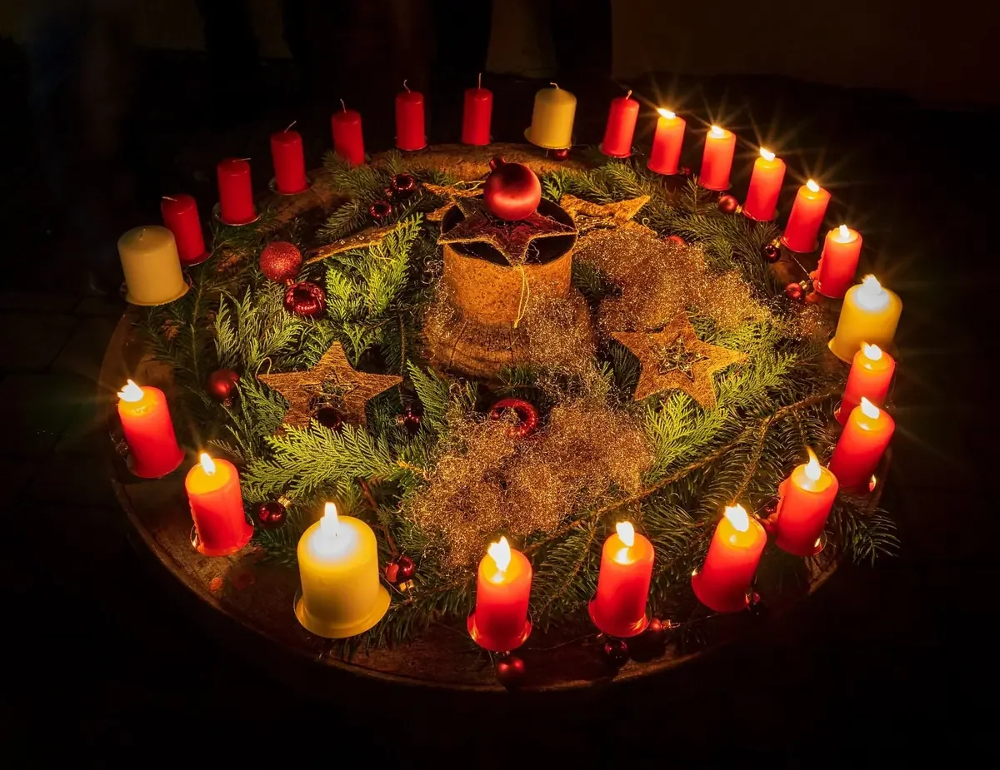
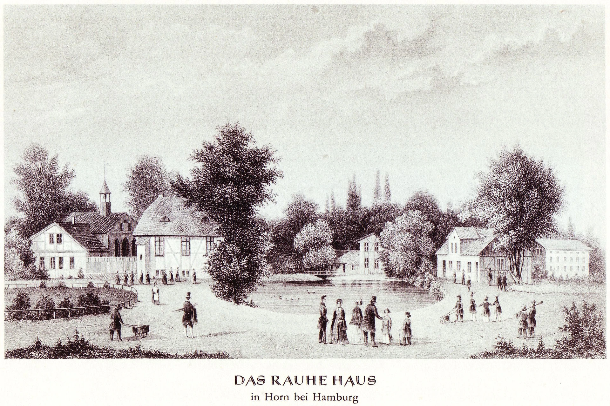
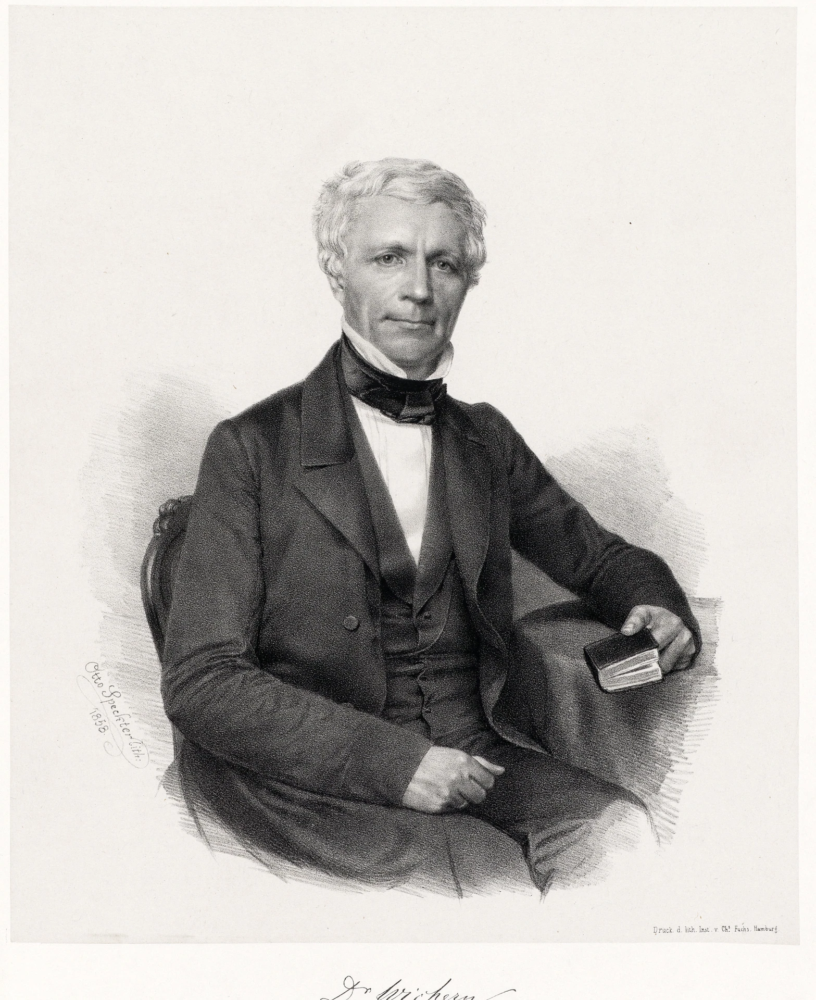
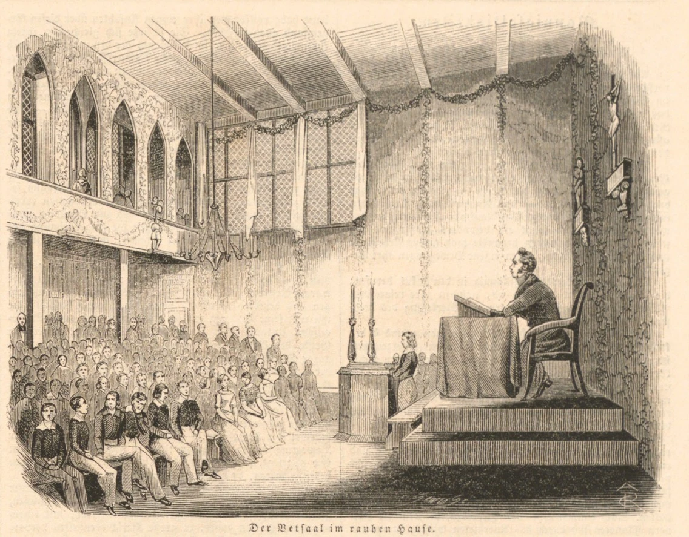
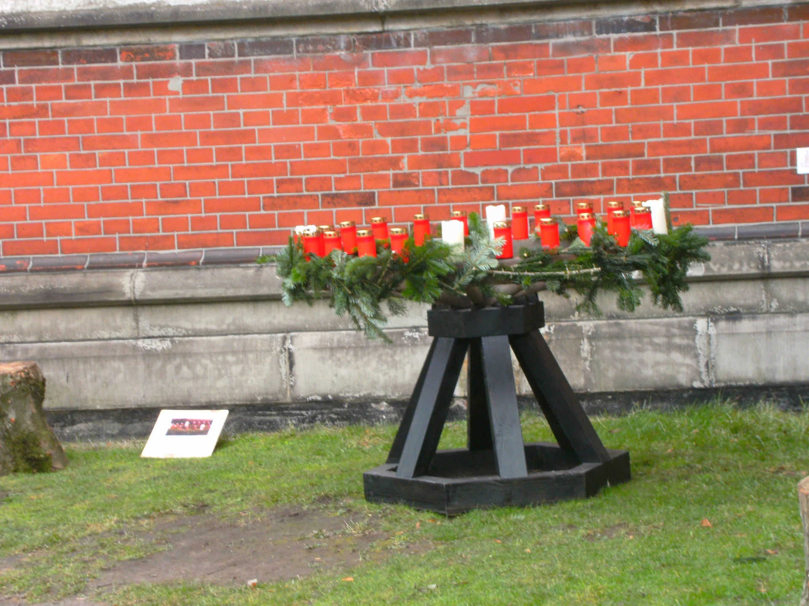
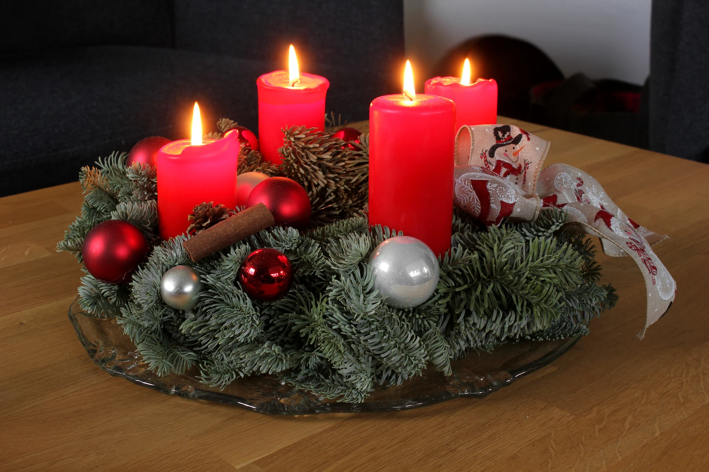
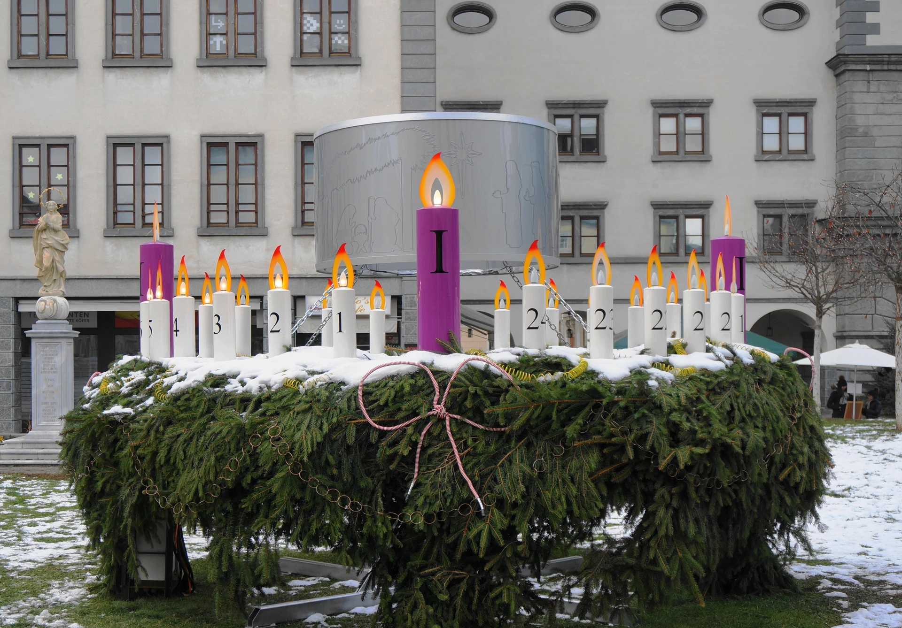
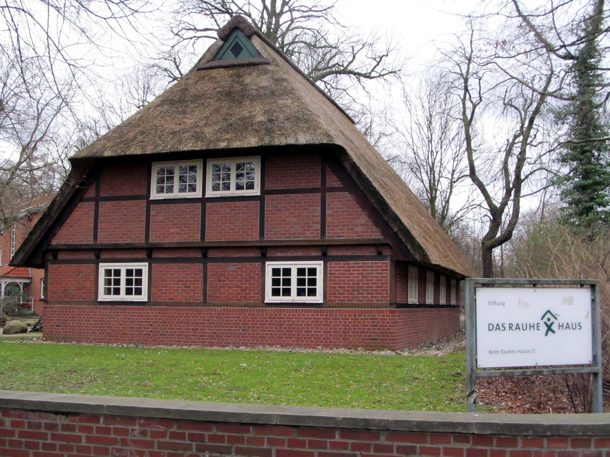

아직 펼치지 않은 카드빛을 들고 오는 사람들 · 1비헤른의 대림절 화환초가 스물네 개나 되는 대림절 화환이에요. 왜 이렇게 많을까요?초가 엄청 많아! 몇 개일까?
1839년 12월독일 함부르크 · 라우에스 하우스
비헤른의 대림절 화환
1839년 함부르크. 갈 곳 없던 아이들이 함께 사는 집에서, 젊은 신학자 비헤른이 수레바퀴에 초를 꽂았어요. 성탄까지 남은 날을 하루에 하나씩 밝히려고요. 오늘의 초를 직접 켜 보세요.
옛날 독일에 아이들이 함께 사는 집이 있었어. 성탄을 기다리는 아이들을 위해 수레바퀴에 초를 꽂고, 날마다 하나씩 켰대. 우리도 오늘의 초를 켜 볼까?
검수 전 시안이에요(기준서 1판). 장면은 라우에스 하우스와 독일 개신교 언론(epd)의 기록에 있는 것만 옮겼고, 전해지는 이야기는 그렇다고 밝혔어요. 상상은 ‘눈 감고 상상해 보기’에서만 해요.
시안 확인용카드 단계 미리 보기
1
함부르크의 ‘거친 집’
1833년 11월, 스물다섯 살 신학자 요한 힌리히 비헤른이 함부르크의 가난한 동네 장크트게오르크에서 온 아이 셋과 함께 낡은 농가로 들어갔어요.
그 농가는 오래전부터 ‘라우에스 하우스’라고 불렸어요. ‘거친 집’이라는 뜻이에요. 그해가 가기 전에 아이는 열두 명이 되었어요.

비헤른은 아이들을 몇 명씩 나눠 한 가족처럼 살게 했어요. 그림 속 여러 채의 집이 그렇게 하나둘 늘어났어요.
옛날 독일 함부르크에, 갈 곳 없는 아이들이 모여 한 가족처럼 사는 집이 있었어.
물어보기그림 속에서 사람은 몇 명이나 보여? 무엇을 하고 있을까?
2
“성탄은 언제 와요?”
대림절은 성탄을 기다리며 준비하는 네 주간이에요. 해마다 성탄 전 네 번째 일요일에 시작해요.
아이들이 날마다 “성탄은 언제 와요?” 하고 물었다는 이야기가 전해져요. 비헤른은 첫 대림 주일부터 성탄 전야까지, 남은 날 수만큼 초를 준비했어요.

아이들이 날마다 물었대. “성탄은 언제 와요?” 너도 기다리는 날이 있으면 자꾸 묻고 싶지?
물어보기너는 기다리는 날이 있을 때 어떻게 날짜를 세?
3
바퀴 위의 스물네 개 초
1839년에는 첫 대림 주일이 12월 1일이었어요. 성탄 전야인 12월 24일까지 스물네 날이에요.
비헤른은 나무 수레바퀴에 초를 꽂아 기도실 천장에 매달았어요. 그리고 날마다 하나씩 불을 더 켰어요.
시안 확인용 · 날짜 바꿔 보기
“남자아이와 여자아이들의 눈이 왜 저렇게 즐겁게 천장의 등을 올려다볼까요? 무엇을 보는지 아이들은 잘 알지요. 오늘이 대림절 첫날이라, 화환에 첫 불이 켜졌거든요.”
비헤른의 회고 · 독일어를 이 안내서가 우리말로 옮김(epd 2020에서 인용)
수레바퀴에 초를 스물네 개나 꽂고, 날마다 하나씩 켰대. 다 켜지면 성탄이야!
물어보기오늘 켤 초는 어디 있을까? 같이 찾아서 눌러 볼까?
4
그때 그 방
1846년, 독일의 한 그림 신문에 라우에스 하우스의 기도실이 실렸어요. 천장 가운데에 둥근 등이 매달려 있고, 아이들이 긴 의자에 앉아 앞을 바라봐요.
이 그림에는 화환이 보이지 않아요. 라우에스 하우스에 남은, 화환이 그려진 옛 그림은 흑백 선 그림 한 장뿐이라고 해요. 그 그림 속 초는 모두 크기가 같아요.

그래서 ‘주일은 큰 흰 초, 평일은 작은 빨간 초’라는 널리 알려진 모습은 나중에 생겼을 수 있어요. 라우에스 하우스의 대변인은 2020년, 처음에는 날마다 같은 초를 썼을 것이라고 말했어요. 위 화환의 ‘1839년처럼’과 ‘오늘 흔한 모양’을 바꿔 보세요.
옛날 그 방 그림이야. 천장에 둥근 등이 매달려 있어. 아이들이 다 같이 앉아 있지?
물어보기이 방에 화환을 매단다면 어디가 좋을까?
5
네 개의 초가 되기까지
1860년 무렵부터 화환에 전나무 가지를 둘렀어요. 1925년 쾰른의 한 가톨릭 성당이 처음 이 풍습을 받아들였고, 1930년에는 뮌헨에서도 보였어요.
초가 스물몇 개나 되는 화환은 집 거실에 두기에 너무 컸어요. 그래서 대림 주일마다 하나씩, 초 네 개만 남게 되었어요.


그래도 비헤른처럼 날마다 하나씩 켜는 화환은 지금도 걸려요. 2020년 독일 연방의회에 걸린 화환은 초가 스물여섯 개였어요. 2026년도 대림절이 11월 29일에 시작해서, 초가 스물여섯 개예요.
지금은 초 네 개짜리 화환이 많아. 일요일마다 하나씩 켜는 거야.
물어보기우리 집에 화환을 놓는다면 초를 몇 개 꽂고 싶어?
눈 감고 상상해 보기
해가 일찍 지는 12월 저녁이에요. 낡은 농가의 방에 아이들이 모여 앉아요. 천장에 매단 바퀴에서는 어제보다 초가 하나 더 타고 있어요. 촛농 냄새, 삐걱이는 나무 바닥. 누군가 손가락으로 남은 초를 세어요. 하나, 둘, 셋… 이제 며칠 남았을까요?
눈을 감아 봐. 깜깜한 겨울 저녁, 아이들이 둥글게 앉아 있어. 천장에 매단 바퀴에서 촛불이 반짝여. 어제보다 하나 더! 남은 초를 같이 세어 볼까?
나의 자리
나는 지금 무엇을 기다리고 있나요? 오늘 하루를 밝힐 작은 초 하나는 무엇일까요?
기다리는 게 있을 때, 너는 하루하루를 어떻게 세?
마음에 닿는 한 줄을 고르거나 직접 써 보세요. 한 줄을 남기면 이 자리의 도장이 찍혀요. 이 기기에만 저장돼요.
더 깊이
궁금한 칸만 펼쳐 읽어도 괜찮아요.
알고 보면
대림절 라틴어 ‘아드벤투스’, 곧 ‘오심’에서 온 이름이에요. 성탄 전 네 주일 동안 오실 분을 기다리며 준비해요. 그래서 시작하는 날이 해마다 11월 27일에서 12월 3일 사이로 바뀌어요.
초의 수 첫 대림 주일부터 12월 24일까지의 날 수예요. 가장 적으면 22개(12월 3일에 시작하는 해), 가장 많으면 28개(11월 27일에 시작하는 해)예요.
비헤른 1808년 함부르크에서 태어나 1881년 함부르크에서 세상을 떠났어요. 라우에스 하우스를 세운 뒤, 교회가 가난하고 버려진 이웃을 돌보는 일에 나서도록 평생 애썼어요.
기록마다 다른 점
초는 몇 개였을까 이 카드는 라우에스 하우스와 독일 개신교 언론(epd)이 전하는 대로, 첫 대림 주일부터 성탄 전야까지 날마다 하나씩 켜는 초로 그렸어요. 그런데 독일역사박물관의 인물 소개는 1839년 바퀴에 초 네 개를 달아 대림 주일마다 켰다고 적었어요.
초의 색과 크기 2020년 같은 주에 나온 기사 가운데 하나는 ‘평일은 빨간 초, 주일은 흰 초’라고 썼고, 다른 하나는 라우에스 하우스 대변인의 말을 빌려 그런 증거가 없다고 썼어요. 이 카드는 두 모양을 다 보여 드려요.
아이들의 물음 아이들이 날마다 성탄이 언제 오는지 물었다는 이야기는 널리 전해지지만, 비헤른이 직접 쓴 글에서 찾지는 못했어요. 그래서 ‘전해지는 이야기’라고 적었어요.
화환과 함께 읽는 말씀
대림절 화환의 빛은 어둠 속에 오시는 빛을 기다리는 성경 말씀과 함께 읽혀 왔어요. 말씀은 뜻만 옮기고, 본문은 대한성서공회 개역개정으로 이어 드려요.
이사야 9장 2절 어둠 속을 걷던 백성이 큰 빛을 보리라는 약속이에요.
요한복음 1장 9절 참 빛이 세상에 와서 모든 사람을 비춘다는 말씀이에요.
누가복음 1장 78~79절 높은 곳에서 해가 떠올라, 어둠 속에 앉은 이들을 비추리라는 사가랴의 노래예요.
나라마다 다른 화환

오스트리아 클라겐푸르트 대성당 광장의 화환은 비헤른처럼 초가 스물네 개예요. 주일 초는 굵은 보라색, 평일 초는 숫자가 적힌 흰 초예요.
가톨릭 교회에서는 대림절 색인 보라색 초를 많이 쓰고, 셋째 주일에는 기쁨을 뜻하는 분홍 초를 켜기도 해요. 나라와 교회마다 색은 조금씩 달라요.
직접 가 보기 · 집에서 켜기

확인한 날 · 2026년 11월 18일 · 바뀌기 쉬운 정보라 정기적으로 다시 확인해요
라우에스 하우스는 지금도 함부르크 호른에서 이웃을 돌보는 사회복지 재단으로 일하고 있어요. 근처 지하철역 이름도 ‘라우에스 하우스’예요.
갈대 지붕을 얹은 옛 농가는 전쟁 때 무너진 뒤 옛 모습대로 다시 지은 집이에요. 둘러볼 수 있는 때는 재단 누리집에서 먼저 확인해 주세요.
집에서 화환에 불을 켤 때는 마른 가지에 불이 옮지 않도록 곁을 지켜 주세요. 아이와 함께라면 전기 초도 좋아요.
서로 다른 날 세 번 금박
화환은 하루에 한 칸씩만 밝아져요. 서로 다른 날에 초를 세 번 켜면 카드에 금박이 입혀져요.
서로 다른 날 세 번 초 켜기
일곱 번, 또는 성탄 전야 채색
셋 가운데 하나만 해도 카드가 채색돼요.
서로 다른 날 일곱 번 초 켜기
12월 24일, 성탄 전야의 초 켜기
아이와 함께 ‘영화처럼 보기’를 끝까지 보기
근거 보기 (7)
- epd(evangelisch.de), 2020.11.27: Neuigkeiten vom Adventskranz — 비헤른의 회고, 초의 크기와 색, 1860·1925·1930, 초 네 개가 된 까닭
- epd(evangelisch.de), 2020.11.25: Bundestag hat wieder einen Wichern-Adventskranz — 1839년 기도실, 2020년 초 26개
- Das Rauhe Haus: Geschichte des Rauhen Hauses(PDF) — 1833년 세움, 아이 셋, ‘라우에스 하우스’라는 이름, 가족처럼 사는 원칙
- 독일역사박물관 LeMO: 요한 힌리히 비헤른 인물 소개 — 태어나고 세상을 떠난 날, 1839년 초 네 개 기록
- 위키미디어 공용: 「라우에스 하우스의 기도실」(Illustrirte Zeitung 1846) 그림 정보
- 위키미디어 공용: 옛 농가 사진 정보 — 전쟁 뒤 옛 모습대로 다시 지은 집
- Wikipedia: Advent wreath — 대림절 색(보라, 분홍)
그림·사진·소리 출처
- 율리우스 고트하일 그림 · 퍼블릭 도메인 · 위키미디어 공용
- 오토 슈펙터 그림 · CC0 · 위키미디어 공용
- 『일루스트리르테 차이퉁』 1846년 7호 · 퍼블릭 도메인 · 위키미디어 공용
- 사진: Roland.h.bueb · CC BY 3.0 · 위키미디어 공용
- 사진: Lothar Spurzem · CC BY-SA 3.0 DE · 위키미디어 공용
- 사진: Naturpuur · CC BY-SA 4.0 · 위키미디어 공용
- 사진: UweRohwedder · CC BY-SA 4.0 · 위키미디어 공용
- 사진: Roman Eisele · CC BY-SA 4.0 · 위키미디어 공용
‘처음 만나는 기독교 문화’의 깊은 카드 시안이에요. 실제 인물의 사진은 쓰지 않았어요. 카드 단계, 켠 초, 남긴 글은 이 기기에만 저장돼요.